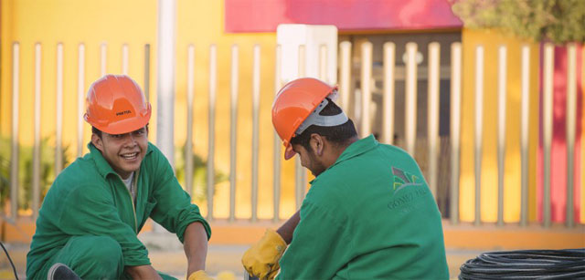
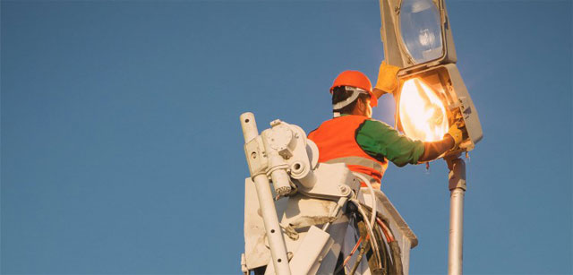
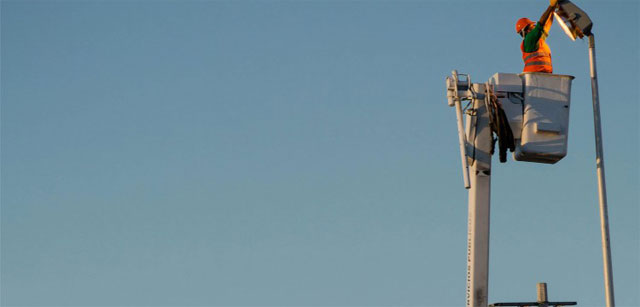

       <div class="pages navbar-through">
          <!-- Page, data-page contains page name-->
          <div data-page="alumbrado" class="page">
            <!-- Scrollable page content-->
            <div class="page-content">
                <div class="cover-preview row">
                    
                </div>
                <div id="gcgpage-content" class="col-100">
                    <h3 id="titulo-entrada">Alumbrado Público</h3>
                    <div class="resumen-page">
              Los servicios que más impacto tienen en la población es el Alumbrado Público de calles, parques y espacios de convivencia y...
                    </div>
                    
                    <div id="gcg-contenido">
                        <p>Los servicios que más impacto tienen en la población es el Alumbrado Público de calles, parques y espacios de convivencia y reunión; y que definitivamente generan una imagen positiva para quienes viven, transitan y visitan nuestro municipio, es con éste planteamiento por lo que desde el inicio instrumentamos el Programa Municipal de Alumbrado Público.</p>
                     <div class="row">
                           
                       </div>
                      <p class="section-bold-title">OBJETIVOS</p>
                      <p>En el departamento de alumbrado público se atendieron 12,456 servicios de los cuales fueron: 2,977 servicios atendidos en 97 ejidos. Se Habilito y cambio a luz blanca en hidalgo de independencia a miguel alemán. También se habilito y cambio a luz blanca victoria de independencia a miguel alemán. Se Rehabilito y cambio a aditivo metálico el alumbrado de la Av. Morelos desde Calle Matamoros al periférico. Se Rehabilito y cambio a aditivo Metálico el alumbrado de la colonia las rosas. De los cuales 2,032 servicios atendidos favorablemente por parte de la dirección de atención ciudadana.</p>
                    <div class="row">
                           
                       </div>
                      
                        <p class="section-bold-title">SE REHABILITÓ Y CAMBIO A LUZ BLANCA EN LAS SIGUIENTES PLAZAS Y PRINCIPALES AVENIDAS.</p>
                      <ul class="row">
                          <li class="col-50">
                              <ul class="row">
                                  <li>Plaza Principal</li>
                                  <li>Plaza Gómez palacio</li>
                                  <li>Plaza Sinaloa</li>
                                  <li>Parque Morelos</li>
                                  <li>Plaza Felipe Ángeles</li>
                              </ul>
                          </li>
                          <li class="col-50">
                              <ul class="row">
                                  <li>Calzada J. Agustín Castro</li>
                                  <li>Boulevard Miguel Alemán</li>
                                  <li>Boulevard Fundadores</li>
                                  <li>Carretera a Ciudad Juárez.</li>
                                 
                              </ul>
                          </li>
                      </ul>
                   
                       <div class="row">
                           
                       </div>
                               
                     
                      
                        
                    </div>
                    <footer class="share-page">
                        <span class="lblShare">Compartir:</span>
                        <ul>
                           <a href="#" id="shareMail"><li></li></a>
                           <a href="#" id="shareFB"><li></li></a>
                           <a href="#" id="shareTwitter"><li></li></a>
                           <a href="#" id="shareWhats"><li></li></a>
                        </ul>
                    </footer>
                </div> 
                 
               
            </div>
          </div>
        </div>
        
       